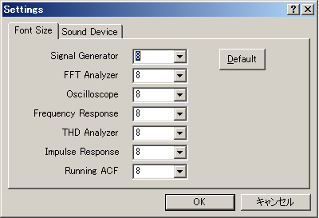

DSSF3 > RA > Reference Manual > Main Window
How to adjust the font size and window size
Select the Tool > Settings from the menu bar. The setting dialog appears as below. Choose the font size for each measurement window and click the OK button. Font size and window size are changed. See the figures below to compare the size. Click the Default button to set them as default values (8 point).

DSSF3 > RA > Reference Manual > Main Window